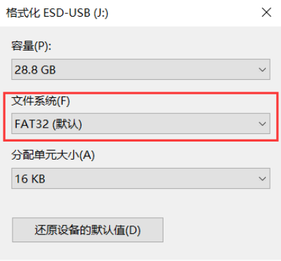
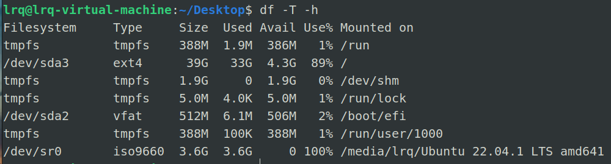
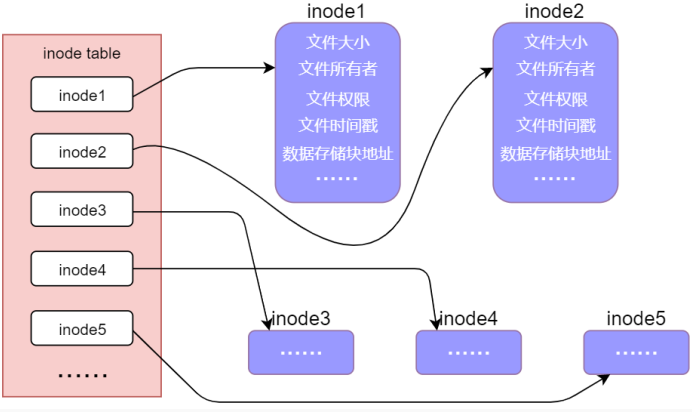
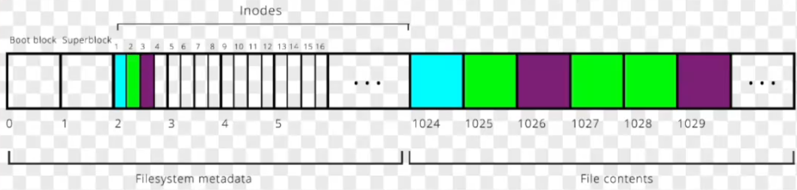
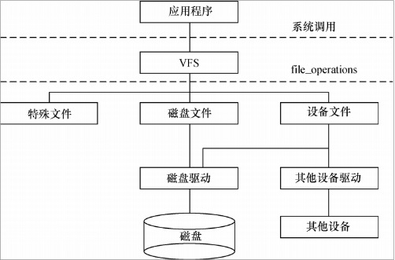
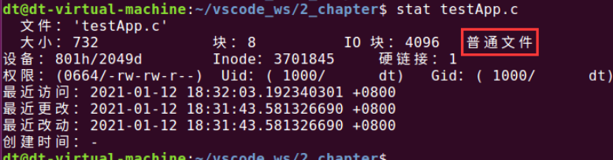

文件系统
文件系统
基本概念
文件系统是负责管理和存储文件信息的软件，它是在存储介质中建立的一种组织结构，这些结构包含操作系统引导区，目录，文件（STM32上的Fatfs是包括这几个，别的文件系统就不一定了）
这样看这个概念可能比较晦涩难懂，说了跟没说一样，下面举个例子：
之前在使用W25Q64这个Flash芯片的时候，由于没有使用文件系统，它有一下这些缺点：
- 往里写数据、读数据的时候都得指定Flash上的具体的地址
- 有效数据的位置不方便记录，如果想使用存进去的数据，还得额外手记什么数据存到哪个地址里了
- 并且数据都是以
page(256 Byte)为最小的读写单位，如果读写时发生跨页的话，那就更麻烦了 - 数据类型多变，读取数据的时候不知道以什么方式读，不像Windows系统，有诸如
.exe，.cpp，.txt之类的文件格式
因此需要一种更加高效的管理文件的方式——文件系统。
使用文件系统时，数据都以文件的形式存储。写入新文件时先在目录中创建一个文件索引，它指示了文件存放的物理地址，再把数据存储到该地址中。当需要读取数据时，可以从目录中找到该文件的索引，进而在相应的地址中读取出数据。具体还涉及到逻辑地址、簇大小、不连续存储等一系列辅助结构或处理过程。
文件系统的存在使我们在存储数据时，不再是简单的向某物理地址直接读写，而是要遵循它的读写格式。如经过逻辑转换，一个完整的文件可能被分开成多段存储到不连续的物理地址，使用目录或者链表的方式来获知下一段的位置
文件系统的分类
- 目前有许多存储介质：硬盘、U盘、SD卡、NAND Flash、NOR Flash、网络存储设备…
- 不同的存储介质一般要使用不同的文件系统，比如管理NAND Flash要用YAFFS文件系统，管理硬盘、SD卡的话可以使用ext文件系统等等
- 不同文件系统的区别在于数据在磁盘中的==布局不同==，比如ext文件系统下，数据可能被按照某种格式组织起来，另一个文件系统又是不同的组织形式
在格式化硬盘的时候，其实就是创建文件系统的过程
在Windows下，一般有FAT、NTFS、exFAT之类的文件系统，Linux下常用ext2、ext3、ext4、NFS之类的文件系统，但也支持Windows的FAT等
文件系统的挂载
文件系统的挂载：==将文件系统连接到某个目录==，使得用户可以通过构造出文件的绝对路径和相对路径，以便访问文件。比如把U盘插到电脑上，电脑上突然多了个G盘，这就是把U盘挂载到了电脑上
在Windows系统下，文件系统挂载是其内部完成的，而在Linux系统中，需要手动把一个存储设备挂载到某个目录（使用mount命令）下才可以访问。
1 | df -T -h |

由此可以看到各个存储设备的文件系统的格式以及挂载到了哪个目录里面
如何看有哪些存储设备，有哪些分区？
使用ls /dev/sd*可以看出有哪些存储设备、哪些分区
其中有sda和sdb2个存储设备，sda有sda1、sda2、sda5三个分区、sdb有sdb1一个分区
Linux内核文件子系统
Linux内核的文件子系统主要分为以下2个模块：
- 文件系统抽象层：为了使用户层的应用程序能够兼容多种不同的文件系统，Linux内核实现了个虚拟文件系统(VFS)，它其实是对不同文件系统的一个抽象，相对于一个基类，各种对文件的操作其实都是调用的VFS的接口，OS会根据物理介质实际的文件系统去调用具体的实现
- 各种具体文件系统的实现：Linux内核为不同的文件系统如ext4、nfs、ftfs…都实现了VFS的提供的接口
文件系统磁盘布局
Ext4是Linux中最常见的磁盘文件系统，下面介绍下该文件系统的磁盘布局：
Ext4将磁盘划分为多个块组（Block Groups），每个块组包含：
- 超级块（Superblock）：存储文件系统的全局信息。如块大小、inode总数、空闲块数…
- 块组描述符表（Group Descriptor Table）：描述每个块组的元信息。如块位图位置、inode 表位置、inode 位图位置等
- 数据块位图（Block Bitmap）：标记块组中哪些数据块已被使用（1）或空闲（0）1 bit 对应 1 个块
- inode 位图（Inode Bitmap）：标记哪些 inode 已被使用（1）或空闲（0）1 bit 对应 1 个node
- inode 表（Inode Table）：存储文件/目录的inode，每个 inode 对应一个文件或目录
- 数据块（Data Blocks）：存储实际的文件数据或目录结构
1 | +-------------------+-------------------+-----+-------------------+ |
什么是inode？
- 它是Linux中存储文件元信息的一种文件，包含对应文件的类型、修改时间、文件内容在磁盘的位置、链接关系、权限等信息

虚拟文件系统
Linux的文件系统中实现了个VFS抽象层，来定义各个文件系统均需要的一些属性和操作
具体地，VFS根据文件系统的共性需求（元数据管理、路径解析、进程隔离）抽象出了4个对象（对应内核中4个数据结构）：
| VFS 对象 | Unix 风格（ext4/XFS） | 非 Unix 风格（NTFS/FAT） | 抽象意义 |
|---|---|---|---|
| 超级块 | struct super_block |
NTFS 的 $Boot 和 $MFT，FAT 的 FAT 表 |
文件系统级别的元数据容器 |
| inode | struct inode |
NTFS 的文件记录（File Record） | 文件/目录的元数据抽象 |
| 目录项 | struct dentry |
FAT 的目录条目（Directory Entry） | 路径解析的中间缓存层 |
| 文件对象 | struct file |
Windows 的文件句柄（HANDLE） | 进程与文件的交互接口 |
对于这4个对象，VFS对每个对象又封装了个操作函数表，里面全是函数指针。每个具体的文件系统都得实现操作函数表里的各个API（有点类似驱动开发里的bus_type和各个具体总线的实现）：
super_operations对象，其中包括内核针对特定文件系统所能调用的方法，比如write_inode()和sync_fs()等方法inode_operations对象，其中包括内核针对特定文件所能调用的方法，比如create(), link()等方法dentry_operations对象，其中包括内核针对特定目录所能调用的方法，比如dcompare(), delete()等方法file_operations对象，其中包括进程针对已打开文件所能调用的方法，比如read(), write()等方法
例如超级块对象的操作函数表定义如下：
1 | struct super_operations{ |
特殊文件系统
在Linux的根目录下，还挂载了很多特殊文件系统，他们不管理磁盘数据，而是提供内核与用户空间的交互接口或实现特定功能
这些文件系统是由内核创建并维护在内存中的，所以通常不允许直接在虚拟文件系统里面创建文件
| 类型 | 文件系统 | 挂载点 | 核心功能 |
|---|---|---|---|
| 内核信息 | sysfs |
/sys |
设备、驱动、内核对象管理 |
| 调试 | debugfs |
/sys/kernel/debug |
内核调试接口 |
| 资源控制 | cgroupfs |
/sys/fs/cgroup |
控制组（cgroups）资源隔离 |
| 临时存储 | tmpfs |
/dev/shm, /run |
内存中的临时文件 |
| 安全 | selinuxfs |
/sys/fs/selinux |
SELinux 策略管理 |
| 容器支持 | overlayfs |
/ (容器内) |
联合挂载，支持镜像分层 |
文件的类型
在Windows中，我们通常以文件的后缀来给文件分类（.c、.txt、mp4…）但是在Linux并不会以文件名的后缀来识别文件，它会把文件的类型作为一个元信息存在inode中
并且，Linux中一切皆文件，也就是说我们不管是控制硬件设备，还是网络，均是对文件操作，因此Linux便衍生出了多种文件类型
Linux中文件大致分为7类：
（1）普通文件：主要包括文本文件和二进制文件，是一般意义上的文件，数据都存在磁盘中，文件内容以字节为单位存储，并且可以访问
（2）目录文件：存一个目录结构的文件，文件中每一个元素被称为目录项，用struct dirent存储，在用系统调用进行读写时，不能像普通文件那样以字节为单位，必须以struct dirent为单位进行
（3）符号链接文件
（4）管道文件：通过pipe()系统调用创建的内存中的一个缓冲区，主要用于进程间通信
（5）套接字文件：用于网络通信
（6）字符设备文件：描述字符设备的文件，在/dev下，它是由文件系统虚拟出来的，存储于内存之中
（7）块设备文件：描述块设备的文件，也在虚拟文件系统中
对于不同类型的文件，
open(),read()等系统调用的作用都不尽相同，这究竟是怎么实现的呢？

当我们得到一个文件描述符fd时，实际上内核中会创建一个文件对象（struct file），文件对象不仅包含文件的基本信息（如文件偏移量、状态标志），还指向一个与该文件类型关联的文件操作表（file_operations 结构体）
1 | struct file_operations { |
Linux内核在创建struct file时，首先会根据inode查看它是什么类型的文件，接着在依据其文件类型，填充struct file_operations，这样就实现了文件操作系统调用的多态！
打开一个文件的步骤
1.系统根据文件名找到这个文件对应的inode编号
2.通过inode编号在inode表中找到对应的inode结构体
3.根据inode结构体中记录的信息，找到对应的数据块，读出数据
1 | struct inode { |
在inode的源码中，我们主要关注2个成员变量：
i_mode：此文件属于什么类型：目录、普通文件、符号链接、网络、FIFO、字符设设备、块设备i_op：表示与inode相关的文件系统操作
1 | struct inode_operations { |
stat系统调用
为了让用户便于查看某文件的元信息，Linux系统为我们提供了stat这个系统调用，通过该系统调用，内核首先会找到该文件对应的inode，接着从inode中提取重要的信息到struct stat中，并展示给用户
